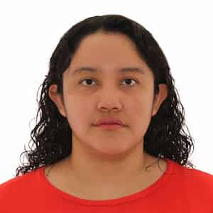

Elizabeth Muralles
About Me
My name is Elizabeth, and I go by Eli. I was born in Guatemala. I am currently studying through BYU–Pathway Worldwide to earn my degree. I live with my mother. I enjoy traveling and learning new things.

Villa Nueva, Guatemala
Guatemala is a country located in Central America and is known for its rich culture, beautiful landscapes, and ancient Mayan history. It is home to volcanoes, lakes, and colorful traditions.